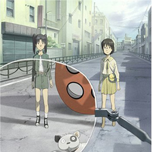

HoloLens おさわり会 in 愛媛・松山 マツヤマンスペース 参加ありがとうございました！
公開日：
だるさんのほろれんずブログ待機
— ふぁんだめんたるろりーたみつばたん (@mitsuba_tan) June 28, 2016
参加報告を書くまでが勉強会やねんで（震え声
HoloLens おさわり会 in 愛媛・松山
全国持ち回りで行われていた HoloLens おさわり会の愛媛・松山版（残念ながら、今回で最後みたい）。今回は駅前のコワーキングスペース・マツヤマンスペースさんをお借りして開催しました。ありがとうございます。あと、公私忙しいにもかかわらずわざわざ Hololense を松山にまで持ってきてくれた @mitsuba_tan もさんきゅーです。
HoloLens というのは、Microsoft が開発した MR（Mixed Reality：複合現実）デバイスです。これ、ディスプレイだけじゃなくて、PC がまるごと1個乗ってるんですよ（別途、母艦が必要な HMD（ヘッドマウントディスプレイ）との大きな違いですね！）。スペックはウチがもっている Surface 3 に GPU を足した感じ？ かなりコンパクトで、プロトタイプにしてはデザインも洗練されているなぁというのが第一印象でした。心なしか、みんな装着するとイケメンになるんや。
なお、日本で入手するのは今のところ難しいみたい。日本マイクロソフト的には今のところ存在しないことになっているデバイスです（ぁ
価格は40万円ほど？ 個人的には40万はちょっと出せないけど、20万だったら断然ほしい、泣きながらリボ払いで買うわって感じ。
VR、AR、そして MR
さて、先ほど MR デバイスと紹介しましたが、これはなんなのでしょう？ よく耳にする VR とか AR とはどこが違うのか？
@mitsuba_tan がわかりやすいスライドを用意してくれたので、そっちを見てみるとわかりやすいかも。
VR（Virtual Reality：仮想現実）っていうのは、現実に存在しない世界を人工的に見せること。@kovlt さんが会場にもってきてくれた「GearVR」がいい例ですね。目が完全にふさがって、前が見えません。見えるのは人工的に作り出された世界。
一方、AR（Augmented Reality：拡張現実）というのは現実の世界に情報を上乗せできる技術です。一時期流行った「セカイカメラ」なんかがそれですね。個人的にはアニメ「東のエデン」にでてくるエデンシステムなんかがピッタリかなって思います。ケータイで写すと、その被写体に関する情報を検索して、吹き出しで表示してくれます。
VR と AR の違いは、双方向性です。VR は仮想現実が五感を刺激し、反応を起こすとそれが仮想現実へフィードバックされます。わかりやすく言うと、バーチャルメイドさんのパンツをのぞこうとする → 平手打ちのグラフィックとともに、ほっぺたに痛みがフィードバックされる → ちょっと喜ぶ（頬の筋肉が弛緩） → バーチャルメイドさんが「なに興奮してるのよ、ブタ野郎！」と罵るみたいな感じですね。AR は現実に情報を上乗せするだけなので、せいぜいカメラごしでみた現実にバーチャルメイドさんを写すぐらいが限界かも。
そして MR は VR と AR のいいところ取りをしているのがすごいところ。

いうなれば、「電脳メガネ」。
VR と違って現実世界がベースになっていて、その部屋をスキャンして、模様替えを行うなんてこともできます。椅子があったらちゃんとそれを検知できるので、ふと振り向くとそこに（ヴァーチャルな）人間が座っていたり。
僕は Roboraid というゲームをやったのですが、部屋がそのままゲーム世界になって、壁に空いた穴からサソリみたいなのがゾロゾロ沸いて、攻撃を仕掛けてきたりするんですよねー。僕は最初それをマトリックスみたいにかわしていたのですが、よく考えたら足を使って横にかわせばよかった。VR だと自分が中心なのであんまり動かなくていい印象があるのですが（そうじゃないゲームもあるかもだけど）、MR は現実世界が舞台なので、歩いたり、向きを変えたり、上も向いたり、しゃがんだり、フツーの活動ができるのですな。かといって AR みたいに一方通行じゃないのがすげぇ。
だからといって、MR が万能かといえばそうでもなかったり。
たとえば、これは MR ではできない表現です。MR は現実に情報を足していくので、情報を削った表現はできないのですね。こういうのには VR（カメラ＋減色→仮想現実）を使う必要があるかも。関係ないけど、1枚絵でよければこのソフトを使えば簡単にできたりするんですよ（窓の杜 - 【NEWS】平凡なデジカメ画像を芸術性の高い写真へ変貌させるレタッチソフト「Tint」）。
MR は VR＋AR の進化形だけど、けっして置き換え可能な進化ではないってことですかね。まぁ、とにかく これはぜひ一度触れてみてほしい！
操作方法
すぼませた指をふわっと広げる“ブルーム”と呼ばれるジェスチャーでスタート画面（Windows のあれみたいなやつ）を呼び出すのがまず基本。
あとは目線を動かしてポインティングし、親指と人差し指でつまむとマウスのクリックみたいな感じ。安定してポインティングするのがちょっと難しい感じですが、慣れれば5分程度で自在に操作できるようになるかも。
部屋のデコボコはメッシュデータとして蓄えられていきます（HoloLens体験 - はつねの日記）。無線LAN のホットスポットと紐づけられてるのかな？ そこはちょっとボーっと聞いてて忘れちゃったかも。こういうのには Kinect の技術も応用されている感じですねぇ。
懇親会もたくさんの人が参加してくれたのですが、いつもより濃い話ができたように思います。やっぱり刺激って大切かな？ また機会があれば体験したいというか、早く日本でも買えるようになってほしいかも。
それじゃーの。